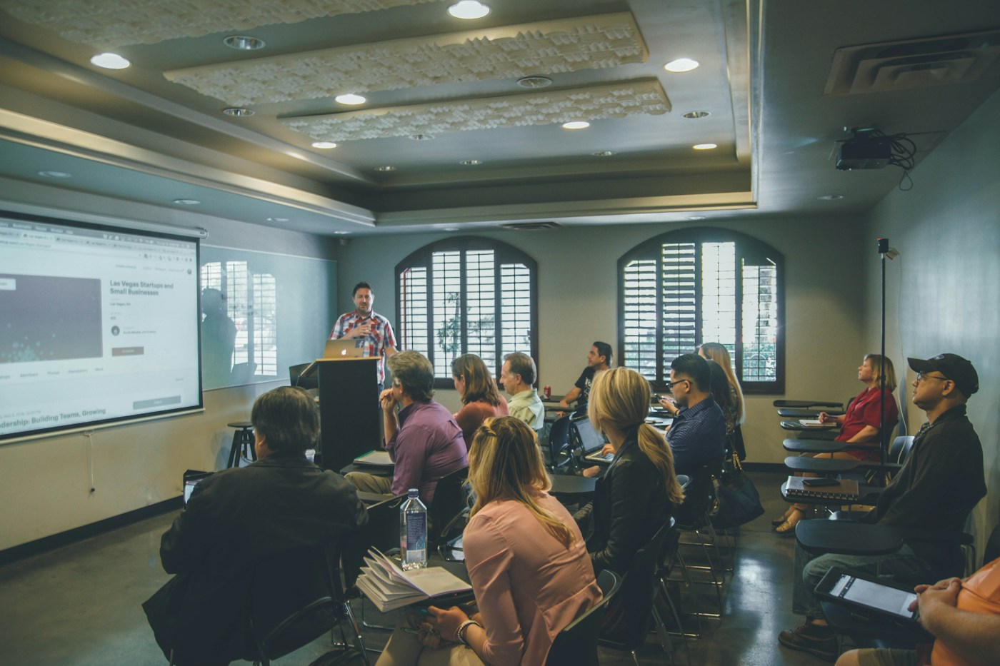

Memimpin dengan AI. Ciptakan nilai nyata.
AI Thinking & Innovation Workshop
Workshop satu hari bagi pemimpin dan profesional untuk mengubah potensi AI menjadi nilai nyata bagi organisasi. Berfokus pada kepemimpinan, strategi, dan penerapan terukur.
Dunia kerja berubah. Kepemimpinan berkembang.
Perspektif yang tepat menentukan arah perubahan.
Otomasi mengubah peran dan proses kerja secara mendasar. Keahlian perlu berkembang seiring kemajuan teknologi, dan nilai organisasi tetap tercipta melalui pertimbangan serta keputusan manusia.
Keunggulan di era AI tidak datang dari tools terbaru saja. Keunggulan datang dari cara berpikir yang terstruktur untuk memecahkan tantangan nyata organisasi.
Clevio AI Pro membantu pemimpin dan profesional memahami potensi serta keterbatasan AI, lalu menerjemahkannya menjadi langkah kerja yang terukur.

Tiga arah pengembangan
 01 Hyper-Productive
01 Hyper-Productive
Memanfaatkan AI untuk meningkatkan fokus dan kualitas kerja bernilai tinggi.Lebih produktif.
Memanfaatkan AI untuk meningkatkan fokus dan kualitas kerja bernilai tinggi.
- 02 Hyper-Iterative
Menguji asumsi dan menyempurnakan gagasan solutif melalui eksplorasi cepat.Lebih adaptif.
Menguji asumsi dan menyempurnakan gagasan solutif melalui eksplorasi cepat.
- 03 Hyper-Impactful
Mengarahkan penerapan teknologi pada hasil yang paling relevan bagi organisasi.Lebih berdampak.
Mengarahkan penerapan teknologi pada hasil yang paling relevan bagi organisasi.
Tiga tahap terarah. Berangkat dari konteks bisnis Anda: bawa tantangan nyata dari lingkungan kerja Anda, kembangkan menjadi gagasan solutif, dan wujudkan rencana tindakan terstruktur.
Limakompetensi


Pimpin perubahan. Bangun nilai bersama AI.

Fasilitator program:
Aranggi Soemardjan
Serial innovator for the greater good. Aranggi menghubungkan pemahaman mendalam atas kebutuhan manusia dengan potensi teknologi melalui perpaduan Design Thinking dan AI Thinking.
Ia memandu peserta memperluas perspektif lewat dialog, lalu mengubah gagasan menjadi langkah nyata.